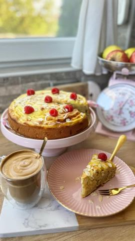

Kolači i keks
Domaća pita sa jabukama i vanilom
28. 9. 2022.reel14 sastojaka

Moja beleška
Sačuvano
Ocena
Sastojci
- Vanila puding
- Testo
Priprema
Prvo se priprema puding kako bi se malo prohladio kada dodje njegov red. U šerpicu sipati mleko i sve ostale sastojke, umešati i mešati sve vreme kada krene da se greje. Onda kada se fino zgusne, ostavite ga sa strane do pripremite testo. Ovde vam čak ni mikser neće biti potreban, možete sve umutiti i sjediniti žicom. Jaja sa šećerima, pa dodajte ulje i mleko, potom i brašno sa praškom za pecivo i cimetom i za kraj sitnije iseckane jabuke. Smesu izlijte u pleh 24-26cm a potom nanesite vanila puding kao na snimku. U zagrejanoj rerni na 180C pecite 40-45 minuta, a preko vrelog možete dodati i sladoled od vanile,
Originalni opis sa Instagrama
Domaća pita sa jabukama i vanilom 🥧🍎🍏 Jednostavna za pripremu, po principu smuti pa prospi, ali kad se razmiriše iz rerne svi dotrče do kuhinje da vide šta se to fino sprema 🥧 Vanila puding: •300 ml mleka •3 kašike šećera •1 vanilin šećer •1 kašika brašna •1 kašika gustina •1 žumance Testo: •3 jaja •150 gr šećera •100 ml ulja •150 ml mleka •300 gr brašna •1 kašičica praška za pecivo •1 kašičica cimeta •3 jabuke Prvo se priprema puding kako bi se malo prohladio kada dodje njegov red. U šerpicu sipati mleko i sve ostale sastojke, umešati i mešati sve vreme kada krene da se greje. Onda kada se fino zgusne, ostavite ga sa strane do pripremite testo. Ovde vam čak ni mikser neće biti potreban, možete sve umutiti i sjediniti žicom. Jaja sa šećerima, pa dodajte ulje i mleko, potom i brašno sa praškom za pecivo i cimetom i za kraj sitnije iseckane jabuke. Smesu izlijte u pleh 24-26cm a potom nanesite vanila puding kao na snimku. U zagrejanoj rerni na 180C pecite 40-45 minuta, a preko vrelog možete dodati i sladoled od vanile, Uživajte 🍎🍂🍁 • • • #domacapita #pitasajabukama #mirisenajesen #slatkisi #idejezadezert #proverenirecepti #ukusnahrana #slatkirecepti